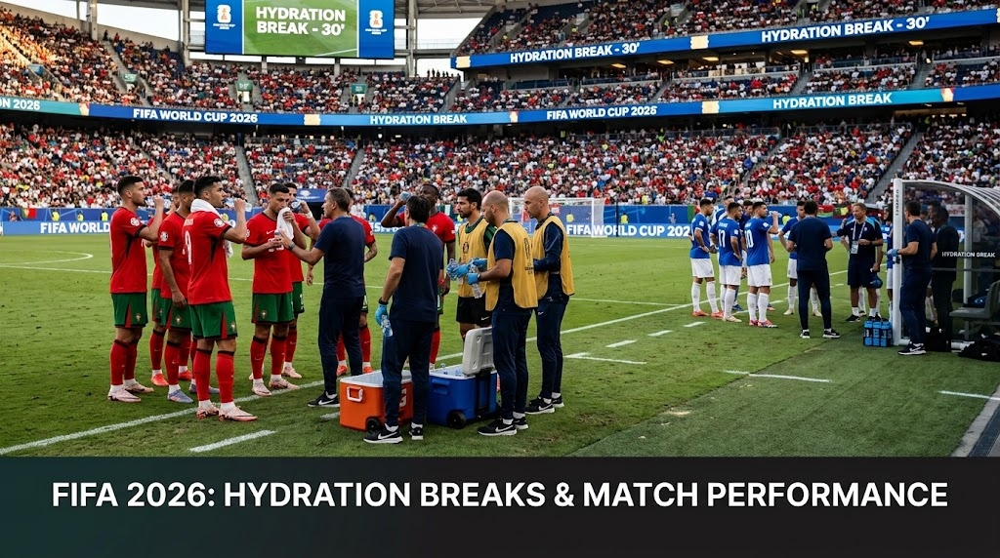

Em Construção / Próximo Projeto
Pipeline de dados, modelação e dashboards interativos em desenvolvimento ativo.
Este será o meu próximo projeto de engenharia e análise de dados. Cruzando a minha formação académica em Ciências de Computadores e Nutrição, o estudo investigará o impacto das pausas regulamentares de hidratação (Hydration Breaks aos 30' e 75' de cada parte) no rendimento físico, nas taxas de esforço cardíaco e na dinâmica tática dos jogadores no Mundial FIFA 2026.
Visão Geral do Estudo
Em condições climatéricas com elevado índice WBGT (Wet-Bulb Globe Temperature), a FIFA implementa pausas obrigatórias de refrigeração e hidratação para salvaguardar a saúde dos atletas. No entanto, o impacto biomecânico e tático destas pausas no ritmo competitivo dos 90 minutos permanece uma área fértil para análise aprofundada de dados.
O objetivo deste projeto é quantificar e modelar as variações de desempenho antes e depois das pausas, através da análise de telemetria e métricas de esforço físico.
Dimensões de Análise em Desenvolvimento
- Distância e Intensidade de Sprint: Comparação dos metros percorridos por minuto e contagem de acelerações/sprints nos blocos de 15 minutos que antecedem e sucedem as pausas.
- Stress Térmico e Fisiologia do Esforço: Modelação da correlação entre temperatura, humidade relativa e fadiga neuromuscular acumulada.
- Recuperação e Ritmo Tático: Avaliação das perdas de posse e quebras de ritmo competitivo antes da pausa versus a reativação de velocidade e pressão de bloco após a reidratação.
- Visualização Interativa: Construção de um dashboard dinâmico em Power BI com visualizações interativas por jogo, posição tática e condições ambientais.